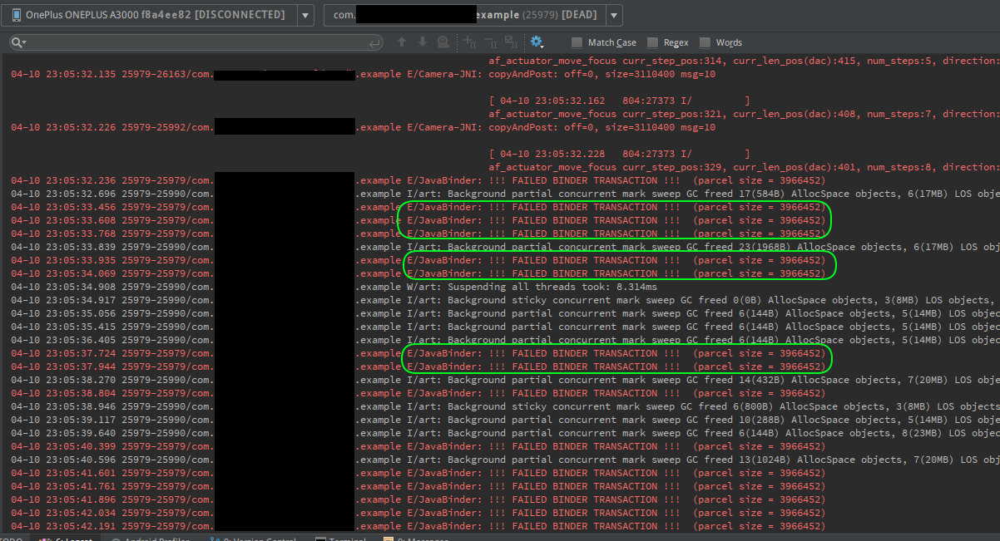

Activity 十分感动，然后拒绝了 finish 的请求
今天晚上为了一个奇怪的问题，折腾了一个晚上，从 SDK 到多线程，最后也是十分偶然才找到了原因，这么坑爹的事情一定要记录下来。
事情的来龙去脉是这样的：最近我接了个私活，需要接入一个 OCR 模块，此时我的代码逻辑大概如下：在 Activity 上显示一个相机的预览界面，并为Camera设置预览回调，于是每一帧都会调用onPreviewFrame，相信用过 Android 的相机 API 的读者都很熟悉了。在这个方法里，我每隔 1 秒就将传递过来的字节数组通过Handler.obtainMessage(...).sendToTarget()将这一帧的图像发送到工作线程，在工作线程中的handleMessage中，会把这个字节数组编码为 Bitmap，然后调用这个 SDK 的接口进行识别，如果识别成功了，就会将这个 Bitmap 对象编码成 base64 JPEG 的字符串（业务需要），然后用同样的方式将之发送给主线程，主线程就会把这个字符串放进 Intent 里，然后调用setResult返回给前一个 Activity，最后调用finish就大功告成了。
读者里的老司机们看到这里，估计已经笑着看我翻车了，毕竟我还是 too young 啊！！
跑起来，端着手机，识别了半天，手都江硬了，终于在 Logcat 里看到了识别到的数据，谁知此时 Activity 却没有关闭。从 Logcat 看，似乎 OCR 重复识别了好几次，难道是因为连续多次调用了finish的缘故？不管怎么说这也不是我希望的，于是我试着加了一个 boolean 值，保证一旦识别成功就不再调用 SDK 的接口。
跑起来，端起手机，识别了半天，手都江硬了，还是没有关闭。此时，我试着按了返回按键，发现居然也无法返回。难道是 Handler 使用不当的锅？我怀疑是不是因为在工作线程调用了finish，于是，我天真地把所有用到主线程 Handler 的地方都从mUiHandler.someMethod改为了new Handler(Looper.getMainLooper()).someMethod，心里想着，这下保证所有 Handler 都是主线程了吧？
跑起来，端起手机，识别了半天，手都江硬了，这次连 Message 都收不到了。在凌乱了几分钟之后，我恍然大悟：一个 Looper 线程是可以绑定多个 Handler 对象的，这就意味着上面的改动会导致发消息和收消息的不是同一个 Handler 对象，当然就跪了。于是，我索性直接改成 UI 线程里调用 SDK，反正一秒一次，卡不了多少吧，于是，各种注释代码，直接在主线程里调用 SDK，识别，关闭 Activity。
跑起来，端起手机，识别了半天，手都江硬了，Activity十分感动，然后再一次拒绝了我finish的请求。这不科学啊！我气得疯狂地戳手机上的返回键。抬头扫了一眼 Logcat，等一下！我突然发现，我每戳一次返回键，Logcat 就刷出一条奇怪的红色错误：

如上图，我立刻谷歌了一下，发现屏幕上冒出了各种 Camera 和 Bitmap，看来和我一样悲剧的不少。
随便点开一条，恍然大悟：
you are trying to parse large data along with intent but as per the documentation, the Binder transaction failed because it was too large.
Solution :
I would suggest you to create bitmap from the received
byte[] dataand store the image on device.then just parse the path of that image to any other activity according to your requirement.Source: How to solve error :” !!! FAILED BINDER TRANSACTION !!! “ in android 4.4 - Stack Overflow
原来如此：我的 Bitmap 图像转换成 base64 之后是很大的一块数据，而 Intent 是不能存放过大的数据的。回答者还贴心地给了解决方案：将 Bitmap 缓存到设备上，然后将文件的路径放进 Intent 里。
室友这时候则建议我直接将图片缩放，我突然好奇：SDK 里是怎么处理的呢？于是，我用 Android Studio 反编译了他的 jar 包，发现他的解决方法非常暴力：在 Activity 类里定义了一个静态的 Bitmap 变量public static Bitmap bigBitmap。
……
其实这方法挺方便的。
……
好吧，那我也这么干吧（手动滑稽）！
终于，Activity 乖乖的把 Bitmap 放进了静态变量，然后乖乖的关掉了，我长舒了一口气，揉了揉江硬的手。
本博客所有文章除特别声明外，均采用 CC BY-SA 4.0 协议 ，转载请注明出处！